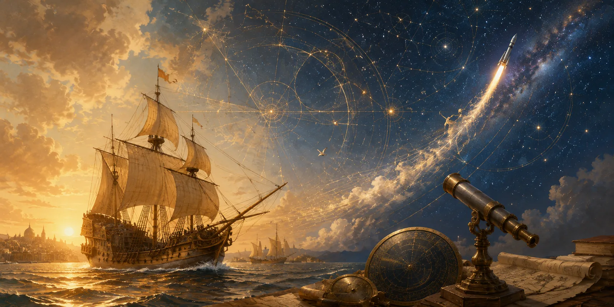
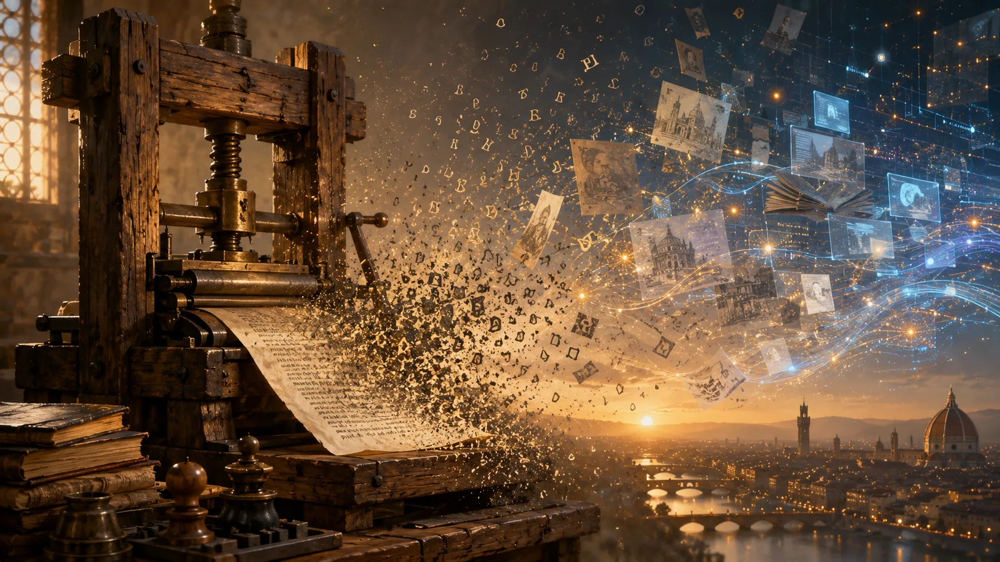
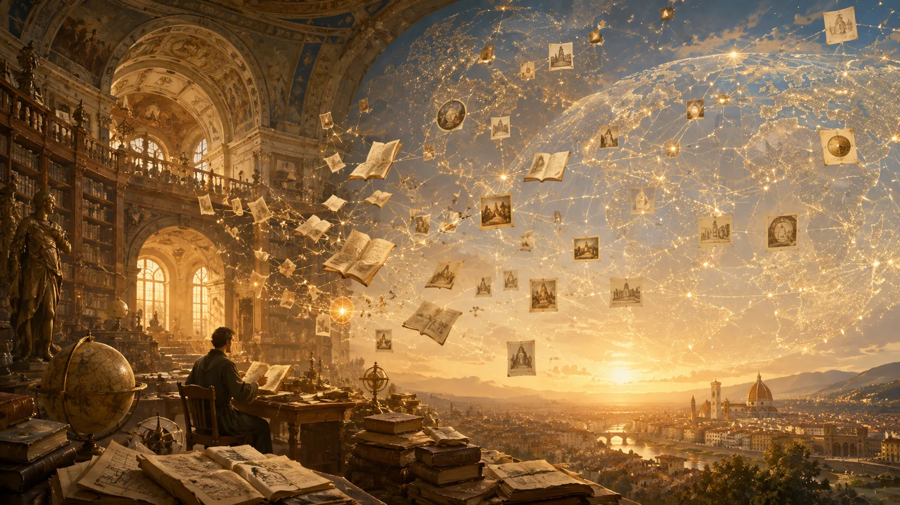
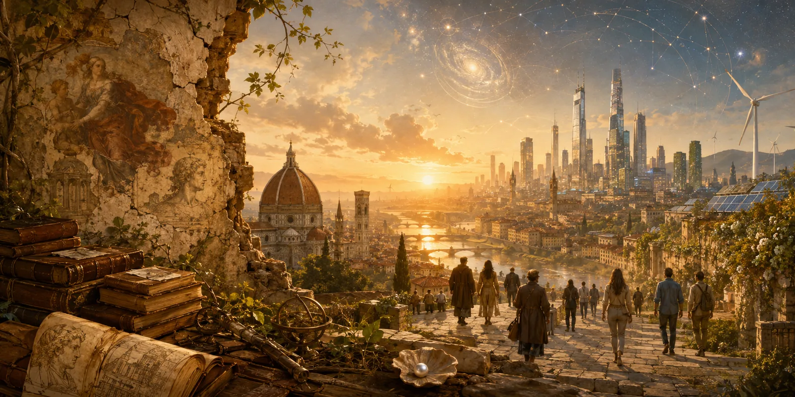

It is said that you cannot remember anything you have learned or saw, but rather precisely how you feel.
Five years ago, when I first watched the French musical Notre Dame de Paris, the song “Florence” struck something in me that I did not know existed. The flowing music, the stirring lyrics, the clashing concepts — it all appealed greatly to me. I began to delve into its themes and meanings.
The song itself discusses the sweeping changes brought by the Renaissance, highlighting the tension between tradition and progress, as the Church faces the birth of a new world shaped by expeditions, art, and science. This moment in history was a “sign of the times”, a turning point where old certainties gave way to bold new visions of what humanity could achieve.
Even now, I remember my young self, pondering, “we are also at a phase where the world is changing before our eyes”! Indeed, the world has changed even more, five years later. Upon my pure shock from hearing Claude Frollo, the symbol of the Church, lamenting “Ceci tuera cela” (this will ruin everything), I began to wonder — are we all standing at the edge of another Renaissance?
And indeed, we are.
Just as Florence symbolized the birth of modern thought, the world now witnesses a transformation driven by technology, awareness, and evolving cultural values. If the Renaissance exalted human potential through arts and sciences, our era celebrates change — across borders and identities. Embark on a journey with me to explore our modern Renaissance, starting from the lyrics of “Florence”, to explore the sign of the times — at a dawn of a world that is changing.
Des bateaux sont partis déjà sur l’océan
Pour y chercher la porte de la route des Indes
“The ships have already started into the ocean
To look for the way of the road to India”
In the era that we are living in, new explorations and expeditions are making their way to various assortments of places, some of which are incredible and unlikely. While the Renaissance witnessed the discovery of various new lands and territory, the century we live in focuses on the exploration of the cosmos.
Above us, we venture to the stars. Humans have long gazed up at the celestial bodies with awe, and it is still comforting in this rapidly changing world that every night we raise our heads to the same moon and galaxy that so many poets had looked upon. It is, however, within this last century that humanity has really succeeded in venturing to “the moon and back”. The 20th century saw the dawn of space exploration, with names like Neil Armstrong, Yuri Gagarin, and Buzz Aldrin etched deep into the annals of the history of humanity along with their incredible feats of moon exploration. On Mars, rovers have sought evidence of ancient life, preparing for future human missions. Telescopes such as Hubble and James Webb have transformed our understanding of the cosmos with breathtaking views of galaxies and the universe’s earliest moments.

Luther va réécrire le Nouveau Testament
Et nous sommes à l’aube d’un monde qui se scinde
“Luther will rewrite the New Testament
And we are at the dawn of a world that is splitting”
Just like Luther, numerous writers are providing our generation with unique books for the readers of our era. One example is a piece of weird fiction, Piranesi by Susanna Clarke, published in 2020. The story is set in a surreal, labyrinthine world called the House, a massive structure filled with endless halls, statues, and an ocean trapped within its walls. The protagonist, Piranesi, lives in this strange world, which he navigates with a sense of wonder and deep reverence. As the story progresses, the narrative becomes gradually interspersed with hints of forgotten memories and a past life, and he begins to unravel the mysteries of the House’s inhabitants, the purpose of the House, and most importantly, himself. The ethereal and phantasmagoric quality of the narrative makes Piranesi truly one of a kind, its thought-provoking aesthetic rendering the reader longing to return to the embrace of the House, where “the Beauty of the House is immeasurable, its Kindness infinite”.
Un dénommé Gutemberg
À changé la face du monde
“A man named Gutenberg
Has changed the face of the world”
Our time has witnessed major changes, much like the Renaissance. In recent years, a company named OpenAI has very much changed the entire face of the world. OpenAI has been at the forefront of AI research, pushing the boundaries of what artificial intelligence can achieve, including the development of a model named ChatGPT (Generative Pre-trained Transformer) and DALL-E, a model used to generate visual art, which have revolutionized language processing and computer vision, respectively. OpenAI has made powerful AI tools more accessible to the general public and developers across the globe. And just as Gutenberg, OpenAI as a company has indeed changed the entire face of the Earth — stories with the most daring plots are written in a matter of seconds, ordeals from the tops of the stars to the bottoms of the oceans can be solved instantaneously, and dilemmas that require logical weighing are easily solved. From the tops of the stars to the bottoms of the ocean, AI is learning, and if one day it does take over the world, it will surely be another “sign of the times”.

Sur les presses de Nuremberg
On imprime à chaque seconde
“The presses of Nuremberg
Are printing at each second”
The advent of the printing press in Nuremberg in the 15th century introduced a new era of mass information that was accessible to more than just the elite. Today, we stand at a similar era, with digital technologies like the internet and search engines transforming access to information. Google, along with other digital libraries and databases, has revolutionized how we seek and consume information, making vast reservoirs of knowledge available at the tip of our fingertips.
These shifts have transformed education and research in profound ways, weaving the world into one giant tapestry of shared knowledge and wisdom accumulated over centuries. The internet has crumbled down the walls that once confined information to just the elites, breaking free of the barriers that geography and circumstance had built. Gone are the days when wisdom was locked away in the quiet corners of libraries, lying in manuscripts of Latin and Greek, bound in fading purple leather and metal, waiting to be unearthed by those who could reach it. Now, with a tap or a click, maps to every corner of the earth, essays from every discipline, unfolds effortlessly. Wherever there is WiFi, every corner of the world becomes an opportunity for learning and discovery.

Des poèmes sur du papier
Des discours et des pamphlets
“The poems are written on paper
There are speeches and pamphlets”
In the age of the Renaissance, the printing press played a crucial role in the spread of new ideas, empowering reformers like Martin Luther to spread their revolutionary thoughts across Europe. Today, social media platforms such as Twitter, Facebook, Instagram and personal blogs have taken on this similar role, acting as digital pulpits from which ideas, both big and small, are broadcast to a global audience within seconds. These platforms serve as modern-day pamphlets, speeches, and forums, enabling anyone with internet access to share their thoughts or even ignite social movements.
Communication platforms have also emerged in this century. Discord, a platform for people of the same interests to set up servers, foster enthusiasm for a fandom or to communicate with friends from all over the globe for valuable advice or just for socializing purposes. WeChat, WhatsApp, Snapchat and other apps also enable message and pictures to be sent within seconds, completely revolutionizing the way of long-distance communication.
De nouvelles idées
Qui vont tout balayer
“The new ideas
Will sweep away everything”
During the Renaissance, numerous new ideas were brought to light: classicism, humanism, individualism, secularism, and skepticism just to name a few. It was a time of sweeping change and new thoughts that overran all else, and the revolution of those ideas are still crucial to the shaping of modern thought.
Today, we are experiencing a similar cultural and intellectual revolution, but with a focus on social justice and inclusion. New ideas concerning equality and equity are being brought to the light, enforcing diversity and equal opportunities for all. Modern dialogues often advocate for a broader understanding of equality and equal rights for everyone. These movements seek to ensure that all individuals have equal opportunities to succeed, regardless of their gender, race, or background.
In considering the “sign of the times”, perhaps the lesson from “Florence” is that transformation is inevitable. Will we, like the architects of the Renaissance, create something enduring, or will our Florence remain a fleeting moment in the thick history books that is our existence?
Come what may, it better not be “Ceci tuera cela” (this will ruin everything). Perhaps a shift of perspective will render everything that is happening around us appear at an entirely new angle. And here at last is a quote from “Florence” itself:
Les petites choses toujours viennent à bout des grandes
“The insignificant things will overcome the great ordeals in the end”
And perhaps, our shells have and will one day shed and wither, but we are reborn from the flames of old thoughts and we evolve with the pearl of the Renaissance in our inner shells and in our hearts: to leave our mark in this “sign of the times”.
